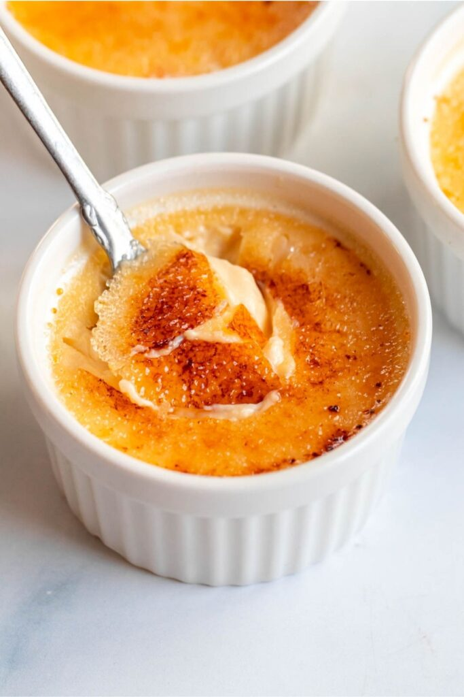

Creme Brulée

Description
Crème brûlée is a classic French dessert known for its rich and creamy custard base topped with a contrasting layer of hard caramelized sugar. The custard is typically flavored with vanilla, providing a smooth and silky texture that's both luxurious and comforting. The top layer of caramelized sugar is achieved by sprinkling sugar on the set custard and then using a kitchen torch to melt and crisp it. The result is a delightful contrast between the creamy custard and the brittle, sweet caramel topping. Crème brûlée is often served in individual ramekins, making it an elegant and indulgent treat perfect for special occasions.
Ingredients
- 2 cups heavy cream
- 1 vanilla bean
- 1/2 cup granulated sugar, divided
- 5 large egg yolks
- 2 tablespoons light brown sugar (for topping)
Steps
- Preheat Oven: Preheat your oven to 325°F (160°C).
- Prepare the Vanilla Bean: Slice the vanilla bean lengthwise and scrape out the seeds.
- Heat the Cream: In a saucepan, combine the cream, vanilla bean seeds, and pod. Heat over medium heat until it just starts to simmer. Remove from heat and let it steep for 15 minutes.
- Whisk Egg Yolks and Sugar: In a bowl, whisk together the egg yolks and half of the granulated sugar until the mixture is pale and thick.
- Combine Cream and Egg Mixture: Gradually whisk the warm cream into the egg yolk mixture. Strain the mixture through a fine-mesh sieve into a clean bowl.
- Bake: Divide the mixture among ramekins. Place the ramekins in a baking dish and fill the dish with hot water halfway up the sides of the ramekins. Bake for 40-45 minutes, or until the centers are just set. Remove from the oven and cool to room temperature, then refrigerate for at least 4 hours or overnight.
- Caramelize Sugar: Before serving, sprinkle the tops with the remaining granulated sugar and the brown sugar. Use a kitchen torch to caramelize the sugar until it forms a crispy, golden crust.